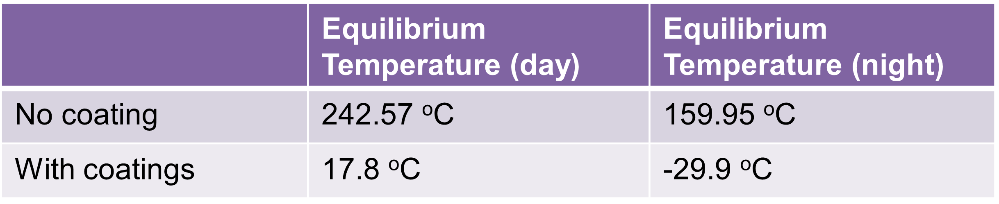

Instruments
The instruments that will be carried in the orbiter are listed here. They satisfy a wide range of the scientific objectives with the InSAR system mapping the whole surface as well as looking to identify any areas of tectonic activity. The near infra-red camera is going to take clearer images of the surface as it’s able to see through the thick atmosphere. The UV spectrograph and the mass spectrometer are going to identify constituents of the atmosphere and surface and the radar sounding will be able to see below the surface.

Thermal & Power System
Here’s some of the key data from the power system Battery sized from power requirements of all instruments- InSAR alternate with comms to earth every 6 hours. Solar arrays sized to power all instruments and charge the battery to be used for the dark side of orbit. We’ll have 7 battery cells weighing just over 5 kg and the solar array will be 7 m^2 and weigh about 3.4 kg
The equilibrium temperature was calculated for the light and dark halves of orbit with no thermal controls and they were found to be much too high for the operating ranges of the instruments so a number of protective coatings were considered and we found that coating 4 sides in Aluminised FEP and 2 in Aluminised Kapton resulted in an acceptable temperature range without the need for any active thermal controls.
Communications
High-gain Antenna:
- Primary communications with Earth: X-band
- 2m diameter dish
- 43.04 dB gain at transmitter
- -148.63 dB gain at receiver
- Located to provide constant contact with probes: S-band
- Also used for emergency communication with Earth
- Less directional = lower data rate
The orbiter will have a high gain antenna that will be used to communicate with ground stations. This consists of a 2m parabolic dish antenna that gives a gain of 43 dB at the transmitter and -149 dB at the receiver. This is assuming its communicating with a 34m deep space network antenna. It will also be equipped with 2 smaller low gain antennas that will primarily be used for communicating with the blimp and the lander but they’ll also be able to be used for backup communication with earth. These are less directional so they have a much lower data rate than the high gain but it means they don’t need to be pointed directly at earth for a signal to be received.